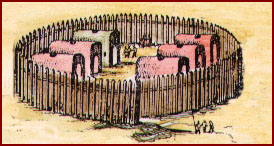

Preparations for the Council
The Turtle clan has been preparing for the Great Council since the summer. The girls of the clan have been chasing away the birds and rabbits that eat the corn, bean, and squash seeds that the clan sowed in the fields. When the food is ripe, the women will gather the beans and shell them. They also will pick the squash. When the days turn cold, the men will help the

women harvest the corn. The people will dry the food by hanging ears of corn, baskets of shelled beans, and pieces of squash from the beams of our long houses.
As the councilors arrive, the women will clean fresh trout and bluefish. The women will also mix baskets of pumpkin seeds and nuts and flavor them with dried berries and maple sugar. As the opening ceremonies begin, young women will crush dried corn for soup to serve after the ceremonies.